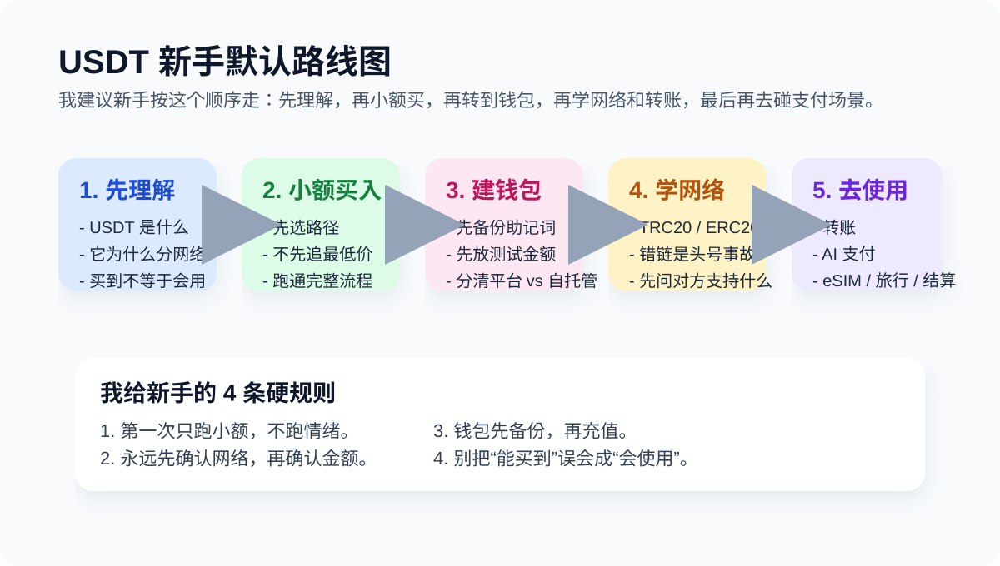

Start Here
写给第一次接触 USDT 的人。Last updated: 2026-04-14

如果你现在脑子里同时有这些问题：
- USDT 到底是什么？
- 为什么同样都叫 USDT，还分 ERC20、TRC20？
- 为什么别人说转 TRC20 USDT 还要准备 TRX？
- 钱包到底是选交易所、软件钱包，还是别的？
那你来对地方了。这份手册默认你是新手，不默认你喜欢黑话。
先记住三件事：
- USDT 只是名字一样，不同网络不是自动互通。
- 自托管钱包意味着控制权在你手里，也意味着备份责任在你手里。
- 区块链转账通常不可撤回，所以第一次一定小额测试。
我建议你按这个顺序走
- USDT 是什么
- 如何购买 Tether USDt（USDT）
- 如果你人在中国大陆，先补这页现实说明
- 怎么选钱包
- 怎么发送 USDT
- TRC20、ERC20、BEP20 有什么区别
- TRON 能量指南
- 如何用 USDT 订阅 ChatGPT
如果你现在更在意的不是“怎么买”，而是“该先学什么”“有没有靠谱社区或频道可以补充”，也建议顺手看 人在中国怎么买 USDT / BTC 里新增的学习路径和社区筛选建议。
我对新手默认最不建议做的 4 件事
- 一上来就大额买入
- 还没备份钱包就往里充值
- 别人只说“发 U 给我”，你却不继续问链
- 还没跑通转账流程，就去研究省到小数点后的手续费
我为什么把 Start Here 写在最前面
因为我看过太多新手，第一步不是输在不会点按钮，而是输在脑子里的顺序错了：先问哪家最便宜，再问哪个钱包最强，最后才发现自己根本没想清楚买完以后要干嘛。
我自己的观点很简单：先把角色关系想清楚，再把小额路径跑通。
这份手册不做什么
- 不代客买币
- 不提供投资建议
- 不承诺哪个钱包适合所有人
- 不把 affiliate 排名伪装成客观结论